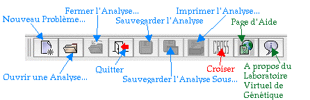
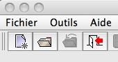
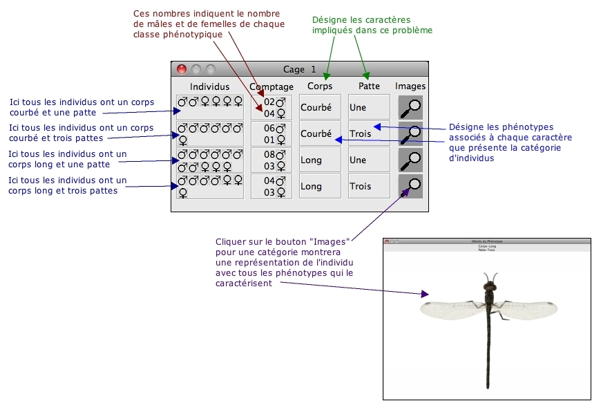

Les Objectifs du Laboratoire Virtuel
Les Déterminismes Génétiques Explorés dans VGLII
Utiliser VGLII - Le Laboratoire Virtuel de Génétique
Comment Démarrer une Nouvelle Analyse
Comment Ouvrir un Travail Sauvegardé
Comment Sauvegarder une Analyse en Cours
Comment Sauvegarder un Travail sous un Nom Différent
Comment Fermer une Analyse en Cours
Comment Croiser Deux Individus
Comment utiliser la commande Super Cross
Comment Imprimer l'Analyse en Cours
Comment Créer un Fichier Imprimable
Comment synthétiser les résultats d’une série de cages et calculer une valeur χ2
Comment Obtenir des Détails sur chaque Phénotype
Comment utiliser le Concepteur de Modèle
Comment Obtenir des Informations sur VGLII
Les objectifs du Laboratoire Virtuel
Une nouvelle analyse débute avec le descriptif d'une cage contenant une population de créatures récoltées dans la nature. Chacune de ces créatures va présenter un à deux des six différents phénotypes (traits) afférents à un, deux ou trois caractères (par exemple, pour le caractère "couleur du corps" on a deux phénotypes possibles "vert" ou "rouge"). Votre objectif est de découvrir comment ces caractères sont transmis. Vous allez procéder à une démarche génétique en sélectionnant des individus, en les croisant, et en observant leur descendance. Vous allez ainsi utiliser ces résultats pour démontrer le déterminisme génétique qui explique de façon convaincante le mode de transmission de ces caractères. Vous devez décider judicieusement des croisements et en réaliser suffisamment pour être assuré que le résultat est significatif et donc interprétable - le programme ne vous donnera pas la réponse (sauf en Mode Entraînement).
Quand vous démarrez une nouvelle analyse, VGLII propose aléatoirement un à trois caractères issus de la liste des caractères observables. Il utilise alors de manière aléatoire un déterminisme génétique à partir d'une liste de multiples combinaisons possibles. La gamme de types de déterminisme génétique qui vous est proposée a été configurée par votre enseignant. Elle peut comprendre un petit ou grand nombre de déterminismes différents simples ou complexes et le Mode Entraînement peut être activé ou non pour un niveau d'analyse donné. Comme le problème est créé sur un mode virtuel et aléatoire, le même caractère peut être sous la dépendance de différents modes de transmission dans deux problèmes indépendants évitant à des étudiants d'une classe de se transmettre les solutions.
VGLII choisit des phénotypes particuliers pour chaque caractère et leur assigne aléatoirement des génotypes. Ceci génère une population d'individus qui sont regroupés dans la "Cage 1".
Votre travail va consister à croiser les individus de cette cage, à observer la descendance et à la tester par croisements. A partir de ces données, vous démontrerez le déterminisme génétique qui permet d'expliquer le mode de transmission des caractères observés.
Les Déterminismes Génétiques explorés dans VGLII
Tous les problèmes proposés par VGLII impliquent des déterminismes monogéniques avec des gènes pouvant présenter deux ou trois allèles. Ainsi on peut observer plusieurs cas possibles suivant:
Démarrer VGLII - le Laboratoire Virtuel de Génétique
Pour démarrer VGLII, double-cliquer sur le fichier application VGLIIx.x. Note: Veiller à ce que le dossier "Problèmes" se trouve dans le même dossier que le fichier VGLIIx.x. La barre d'outils comprend des boutons raccourcis:

Comment Démarrer une Nouvelle Analyse
Quand vous démarrez VGLII, la barre de menu apparaît:

A partir du menu "Fichier", sélectionner "Nouveau Problème" ou cliquer sur le bouton raccourci et vous verrez une liste de fichiers de types de problèmes. Les fichiers sont listés par ordre croissant de difficulté. Des fichiers de types de problèmes supplémentaires peuvent être générés en utilisant le programme VGLAdmin. Sélectionner le fichier et cliquer sur le bouton "Ouvrir". Une fois que vous avez démarré un nouveau problème, une fenêtre (Cage 1) s'ouvre. Cette Cage est le point de départ de votre projet. Les individus ne sont pas nécessairement issus de lignée pure.
Une cage en Mode Analyse apparaît comme ci-dessous:

Un exemple de série de croisements est montrée ci-dessous:
On peut retranscrire ces résultats de la manière suivante:
Croisement 1:
Parents: Mâle [Corps Long; Une Patte] de la Cage 1 X Femelle [Corps Courbé; Trois Pattes] de la Cage 1
Descendance:
(dans la Cage 2) 33 [Corps Long; Une Patte]
Si votre enseignant a activé le Mode Entraînement pour un type de problème, vous pourrez visualiser les détails de la solution - c'est à dire le déterminisme génétique de chaque caractère et le génotype de chaque type d'individus.
En Mode Entraînement, une cage apparaîtra comme ci-dessous:
Vous verrez la même fenêtre qu'en mode Analyse avec en plus la possibilité de vérifier le déterminisme et les génotypes.
Comment Ouvrir un Travail Sauvegardé
Vous pouvez utiliser cette fonction pour charger une analyse sur laquelle vous avez déjà commencé à travailler. Pour l'ouvrir, vous pouvez soit sélectionner "Ouvrir Une Analyse" à partir du menu déroulant ou cliquer le bouton de raccourci. Une boîte de dialogue s'ouvrira et vous aidera à sélectionner votre fichier en explorant l'arborescence des répertoires. Sélectionner le fichier et cliquer sur "Ouvrir". VGLII ouvrira l'analyse dans l'état de progression dans lequel vous l'avez laissée: vous retrouverez la cage de départ ainsi que toute la collection de cages que vous avez créées y compris celles que vous aviez fermées lors de la dernière session.
Comment Sauvegarder une Analyse en Cours
Vous pouvez utiliser cette fonction pour sauvegarder votre travail en cours sous forme de fichier. Pour cela, cliquer sur "Sauvegarder" à partir du menu déroulant "Fichier" ou sur le bouton de raccourci. Une boîte de dialogue s'ouvrira et vous permettra de choisir le dossier dans lequel vous sauvegarderez le fichier en explorant l'arborescence des répertoires. Entrer le nom de votre fichier dans le champ "nom de Fichier" puis cliquer sur "Ouvrir". Cette opération crée et ouvre un fichier contenant tout votre travail en cours. Ce fichier aura une extension .wrk.
Comment Sauvegarder un Travail sous un Nom Différent
De la même manière que précédemment sauf qu'une copie de l'analyse à un stade différent est sauvegardée sous un nouveau nom.
Comment Fermer une Analyse en Cours
Vous pouvez utiliser cette fonction pour fermer un problème sur lequel vous avez travaillé. Pour cela, cliquer sur "Fermer l'Analyse" à partir du menu déroulant "Fichier" ou sur le bouton de raccourci. Une boîte de dialogue s'ouvrira pour vous demander de confirmer votre décision. Si vous sélectionnez "Oui" et si l'analyse n'est pas sauvegardée, la boîte de dialogue vous proposera de sauvegarder l'analyse, vous pouvez ignorer cette action si vous ne souhaitez pas sauvegarder votre travail.
Comment Croiser Deux Individus
Pour croiser deux individus, vous devez sélectionner un mâle et une femelle à partir de n'importe laquelle des cages ouvertes dans la fenêtre (le mâle et la femelle peuvent provenir de deux cages différentes). Le mâle sélectionné apparaît en bleu et la femelle en rouge. Cliquer alors sur "Croiser" à partir du menu déroulant "Outils" ou sur le bouton de raccourci. Cette opération génère une nouvelle cage contenant la descendance de votre croisement.
Comment utiliser la commande Super Cross
Super Cross vous permet de simuler le résultat de nombreux réplicats d'un même croisement. Ceci vous permet d'avoir en 1 click une descendance de taille suffisante pour appliquer un test statistique. Sélectionnez les deux individus à croiser puis choisissez "Super Cross" à partir du menu "Outils". Vous devrez ensuite choisir le nombre de descendant à analyser. Attention, en réalité, et selon les espèces, cette expérience pourrait s'avérer très coûteuse; vous devez l'utiliser uniquement quand cela est nécessaire.
Comment Imprimer l'Analyse en Cours
Pour imprimer le contenu de la cage de départ (Cage 1) et toutes les cages que vous avez produites par croisement, cliquer sur le bouton "Imprimer" (à gauche) ou sélectionner "Imprimer l'Analyse" à partir du menu déroulant "Fichier". Vous aurez peut-être besoin de sélectionner une imprimante dans le menu "Fichier" puis "Mise en page".
Comment Créer un Fichier Imprimable
Vous pouvez utiliser cette fonction pour sauvegarder votre Analyse dans un format facilement imprimable; le fichier pourra être lu par les navigateurs web et de nombreuses applications texte. Pour créer le fichier, sélectionner "Créer un Fichier Imprimable" à partir du menu déroulant "Fichier" ou cliquer sur le bouton de raccourci. Une boîte de dialogue s'ouvrira et vous permettra de choisir le dossier dans lequel vous sauvegarderez le fichier en explorant l'arborescence des répertoires. Entrer le nom de votre fichier dans le champ "Nom de Fichier" puis cliquer sur "Imprimer". Ce fichier a une extension .html.
Comment synthétiser les résultats d’une série de cages et calculer une valeur χ2
Sélectionnez une ou plusieurs cages et choisissez "Créer un Tableau Récapitulatif" dans le menu "Outils". VGLII peut compter le nombre de chaque type d’organismes dans la série de cages que vous aviez sélectionnée. Ceci permet notamment d'augmenter les effectifs de la descendance issue d'un couple ou de parents identiques génétiquement.
Premièrement, faire une double-clique sur chacune des cages que vous voulez sélectionner pour la synthèse; leur contour intérieur deviendront rouge pour indiquer qu’elles ont été sélectionnées. Vous pouvez désélectionner les cages que vous aviez choisies précédemment avec une double clique ; vous pouvez aussi désélectionner toutes les cages en choisissant l’option "Tout Désélectionner" dans le menu déroulant "Outils".
Une fois vos cages sélectionnées, choisissez " Créer un Tableau Récapitulatif" à partir du menu "Outils". Ceci produira un tableau comme ci-dessous:
La ligne au début de la page monter que c’était une synthèse des cages 1, 2, 3, 4 et 5 Ceux-ci sont les résultats obtenus de l’accouplement de deux parents hétérozygotes, donc on s’attendra à un ratio de 3 : 1. Vous pouvez rentrer les valeurs prévues dans les cellules de la colonne Attendus Ces valeurs doivent être entières et plus grandes que zéro. Quand toutes les cellules seront remplies de valeurs valables, VGLII affichera la valeur de χ2 et la valeur correspondante de p. Dans ce cas, le ratio observé est 103 :42, ce qui apparait très proche du ratio prévu 3 :1. Ce qui est confirmé par la valeur de p plus grande que 0.05. Donc, la déviation de ces données du ratio 3 :1 n’est pas significative.
La ligne du haut indique qu'il s'agit d'une compilation des cages 3, 4, 5, & 6. Lorsque plusieurs caractères ségrègent, vous pouvez sélectionner le caractère ou les caractères pour le(s)quel(s) vous souhaitez évaluer les effectifs en cochant la case correspondante. Pour tester l'hypothèse de manière plus fiable, vous pouvez choisir d'augmenter l'effectif.
Vous pouvez utiliser cette fonction pour fermer/ré-ouvrir n'importe laquelle des cages que vous avez produites. Sélectionner "Cages" à partir du menu déroulant "Outils". Une fenêtre s'ouvrira avec la liste des cages ouvertes lors de votre session. Celles qui sont visibles sont cochées. Cochez simplement une cage fermée pour l'ouvrir.
Vous pouvez utiliser cette fonction pour ré-organiser les cages qui sont disposées en désordre sur l'écran. Sélectionner "Ré-arranger les Cages" à partir du menu déroulant "Outils". Toutes les cages visibles seront alignées l'une sous l'autre et de gauche à droite.
Comment Obtenir des Détails sur chaque Phénotype
Pour obtenir des détails illustrés du phénotype des individus d'une cage, vous pouvez cliquer sur l'outil "loupe". Ces images sont volontairement simples et fictives; elles sont conçues dans le but essentiel d'illustrer les phénotypes recombinés. Exemple:
Comment utiliser le Concepteur de Modèle
Le Concepteur de Modèle est accessible à partir du menu "Outils". Il vous permet d'entrer les caractéristiques du modèle génétique au fur et à mesure de votre analyse. Vous commencez par spécifier les caractéristiques générales puis les détails au fur et à mesure. Vous pouvez aussi indiquer les croisements qui donnent les informations du déterminisme. Votre enseignant peut vous demander de remplir ce formulaire pour évaluer votre travail.
Comment Obtenir des Informations sur VGLII
Pour obtenir des détails sur l'application VGLII vous pouvez cliquer sur "A propos de VGLII" à partir du menu d'aide ou à partir du bouton raccourci.